(Picture:
(Picture: In this tutorial we will implement Facebook, Twitter and GitHub authentication using the social-auth-app-django library. They support several other services and the process should be somewhat similar. The social-auth-app-django library have several customization options, which sometimes makes it challenging to get started. So for this tutorial I will guide you through the mandatory steps where in the end you will have a fully functional social authentication.
Installation
As usual, go for pip:
pip install social-auth-app-djangoAdd the social_django to your INSTALLED_APPS:
INSTALLED_APPS = [
'django.contrib.admin',
'django.contrib.auth',
'django.contrib.contenttypes',
'django.contrib.sessions',
'django.contrib.messages',
'django.contrib.staticfiles',
'social_django', # <--
'mysite.core',
]Migrate the database:
python manage.py migrate
Operations to perform:
Apply all migrations: admin, auth, contenttypes, sessions, social_django
Running migrations:
Applying social_django.0001_initial... OK
Applying social_django.0002_add_related_name... OK
Applying social_django.0003_alter_email_max_length... OK
Applying social_django.0004_auto_20160423_0400... OK
Applying social_django.0005_auto_20160727_2333... OK
Applying social_django.0006_partial... OKThe library will automatically handle authentication tokens and all the required information to deal with OAuth and OAuth2. Generally speaking, you won’t need to handle it manually nor access the user’s social profile.
Configuration
Update the MIDDLEWARE_CLASSES by adding the SocialAuthExceptionMiddleware to the end of it:
MIDDLEWARE_CLASSES = [
'django.middleware.security.SecurityMiddleware',
'django.contrib.sessions.middleware.SessionMiddleware',
'django.middleware.common.CommonMiddleware',
'django.middleware.csrf.CsrfViewMiddleware',
'django.contrib.auth.middleware.AuthenticationMiddleware',
'django.contrib.auth.middleware.SessionAuthenticationMiddleware',
'django.contrib.messages.middleware.MessageMiddleware',
'django.middleware.clickjacking.XFrameOptionsMiddleware',
'social_django.middleware.SocialAuthExceptionMiddleware', # <--
]Now we update the context_processors inside TEMPLATE:
TEMPLATES = [
{
'BACKEND': 'django.template.backends.django.DjangoTemplates',
'DIRS': [
PROJECT_DIR.child('templates'),
],
'APP_DIRS': True,
'OPTIONS': {
'context_processors': [
'django.template.context_processors.debug',
'django.template.context_processors.request',
'django.contrib.auth.context_processors.auth',
'django.contrib.messages.context_processors.messages',
'social_django.context_processors.backends', # <--
'social_django.context_processors.login_redirect', # <--
]
},
},
]Add the AUTHENTICATION_BACKENDS:
AUTHENTICATION_BACKENDS = (
'social_core.backends.github.GithubOAuth2',
'social_core.backends.twitter.TwitterOAuth',
'social_core.backends.facebook.FacebookOAuth2',
'django.contrib.auth.backends.ModelBackend',
)So, as you can see, here at this point we will need to specify the correct backends, depending on your needs. Since here in this example we will be working with GitHub, Twitter and Facebook I just added those three backends.
Update the urls.py add the social-auth-app-django urls:
urls.py
from django.conf.urls import url, include
from django.contrib import admin
from django.contrib.auth import views as auth_views
from mysite.core import views as core_views
urlpatterns = [
url(r'^$', core_views.home, name='home'),
url(r'^login/$', auth_views.login, name='login'),
url(r'^logout/$', auth_views.logout, name='logout'),
url(r'^oauth/', include('social_django.urls', namespace='social')), # <--
url(r'^admin/', admin.site.urls),
]Let’s set the default values for the LOGIN_URL, LOGOUT_URL and the LOGIN_REDIRECT_URL.
The LOGIN_REDIRECT_URL will be used to redirect the user after authenticating from Django Login and Social Auth.
LOGIN_URL = 'login'
LOGOUT_URL = 'logout'
LOGIN_REDIRECT_URL = 'home'As we are using the built-in login and logout views, let’s just create the home view inside the core app:
views.py
from django.contrib.auth.decorators import login_required
from django.shortcuts import render
@login_required
def home(request):
return render(request, 'core/home.html')home.html
{% extends 'base.html' %}
{% block content %}
<h2>Homepage</h2>
<p>Hello {{ user.username }}!</p>
{% endblock %}We are good to go. For each social network you will need to register your app in their system. So from now on the steps will vary on the service provider. Let’s tackle them one at a time. First one: GitHub.
GitHub Authentication
Log in to your GitHub account, go to Settings. In the left menu you will see Developer settings. Click on OAuth applications.
In the OAuth applications screen click on Register a new application. Or simply click on the link below:
https://github.com/settings/applications/new
Provide the information below:
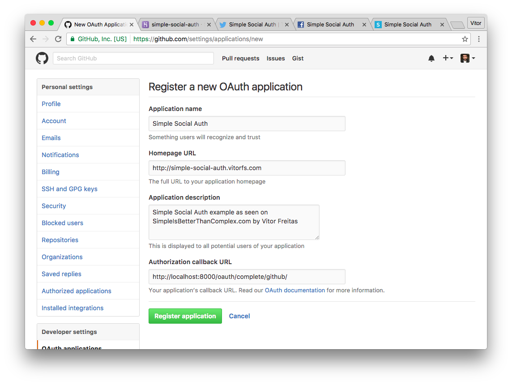
The important step here is the Authorization callback URL. Notice that I’m putting a localhost URL. http://localhost:8000/oauth/complete/github/.
After you create the app, you will be redirected to this screen:
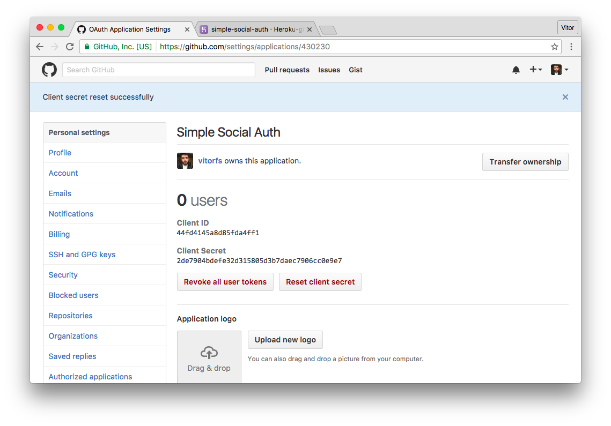
PS: Keep this information safe. I’m putting it here just so it is more explicit in the example. For the running application you will find in the end of this tutorial it uses different credentials.
Anyhoo, let’s grab the information we need:
Client ID
44fd4145a8d85fda4ff1
Client Secret
2de7904bdefe32d315805d3b7daec7906cc0e9e7Now we update the settings.py:
SOCIAL_AUTH_GITHUB_KEY = '44fd4145a8d85fda4ff1'
SOCIAL_AUTH_GITHUB_SECRET = '2de7904bdefe32d315805d3b7daec7906cc0e9e7'PS 2: It is not a good idea to keep this kind of information directly in the settings.py. Please refer to this article Package of the Week: Python Decouple to learn how to separate configuration from settings.
Login View
Let’s create a Login View that can both handle Django Login and the GitHub Login. The default login view look for a template in registration/login.html. Let’s create it:
registration/login.html
{% extends 'base.html' %}
{% block content %}
<h2>Login</h2>
<form method="post">
{% csrf_token %}
{{ form.as_p }}
<button type="submit">Login</button>
</form>
<br>
<p><strong>-- OR --</strong></p>
<a href="{% url 'social:begin' 'github' %}">Login with GitHub</a><br>
{% endblock %}Note that the important part to start the GitHub authentication is {% url 'social:begin' 'github' %}.
At the moment our login page should look like this:
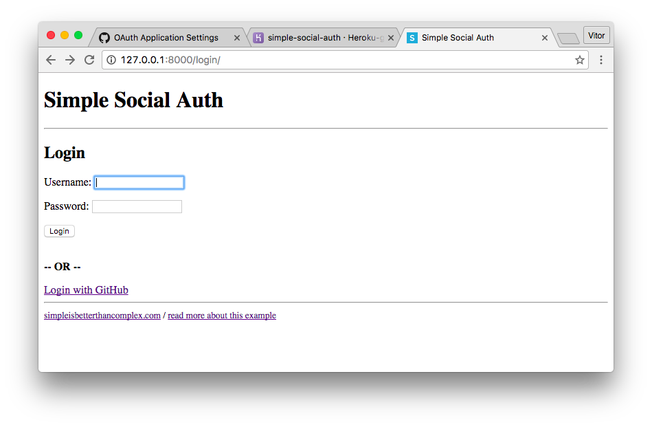
A good thing about the social login is that the process to both Login or Signup is pretty much the same. Meaning that the user without having an account in your application, he/she can login. If there is no account matching the username/email, an account will automatically be created.
Let’s try our new Login with GitHub link:
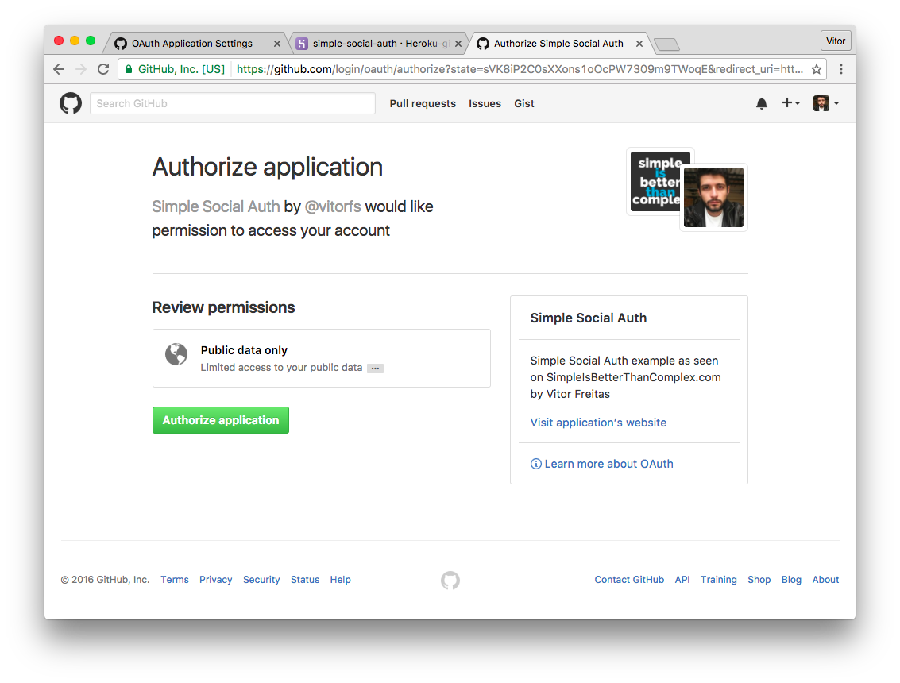
Click on Authorize application
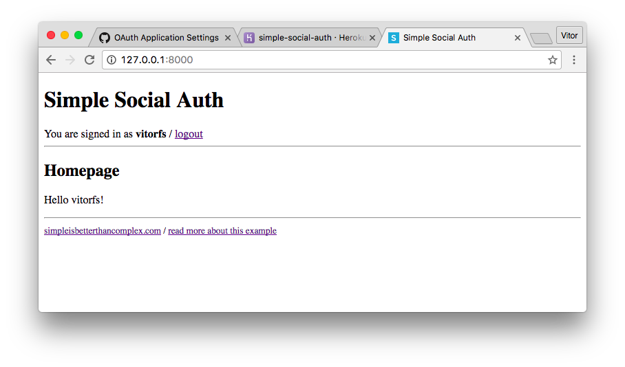
And there you go! An account was just created and is signed in!
There is a small caveat in cases like this: the user have created an account but have no password. We will address this issue later on.
Twitter Login
Go to apps.twitter.com and click on Create New App.
Add the details just like you did with the GitHub App:
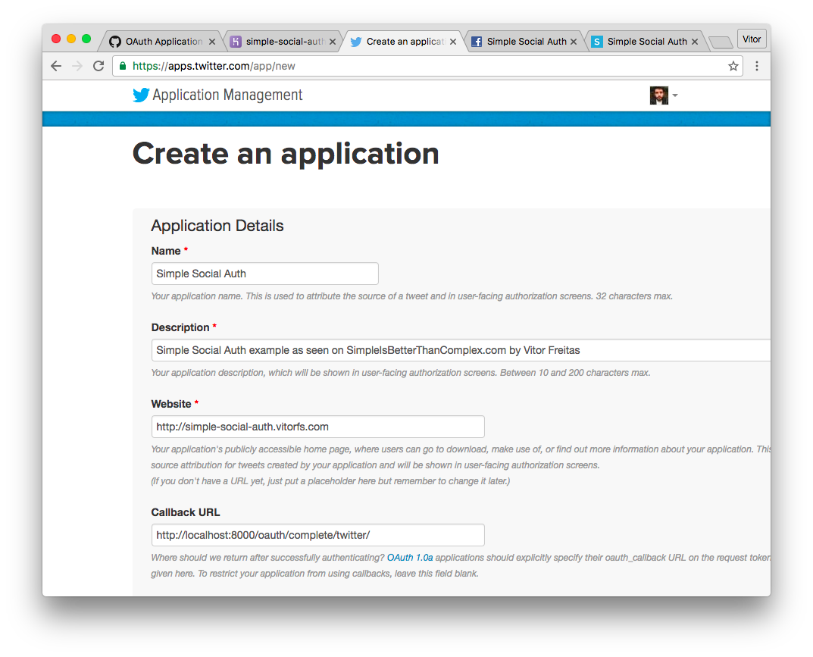
For Twitter we will use the http://localhost:8000/oauth/complete/twitter/ callback url.
Go to Permissions tab and change the permissions to Read Only:
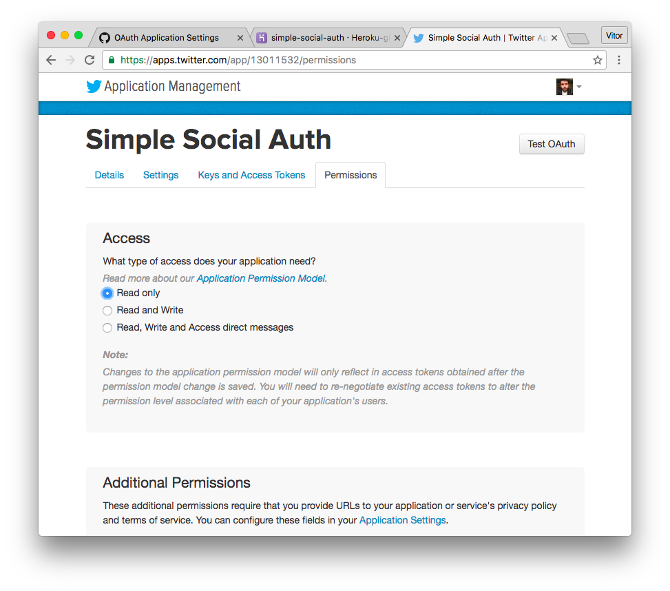
The less permissions we have better. This way we make our users more comfortable.
Now go to Keys and Access Tokens tab and grab the Consumer Key (API Key) and Consumer Secret (API Secret) and update the settings.py:
SOCIAL_AUTH_TWITTER_KEY = '9TD12xahCWCDdyLzpmw61GSM9'
SOCIAL_AUTH_TWITTER_SECRET = 'mwtdcUe4uOvvJjDk2AuQ9Mq2xiHPw3740m5iGLf6hwg3B4TNSx'To enable the Twitter login, simply update the registration/login.html template:
{% extends 'base.html' %}
{% block content %}
<h2>Login</h2>
<form method="post">
{% csrf_token %}
{{ form.as_p }}
<button type="submit">Login</button>
</form>
<br>
<p><strong>-- OR --</strong></p>
<a href="{% url 'social:begin' 'github' %}">Login with GitHub</a><br>
<a href="{% url 'social:begin' 'twitter' %}">Login with Twitter</a>
{% endblock %}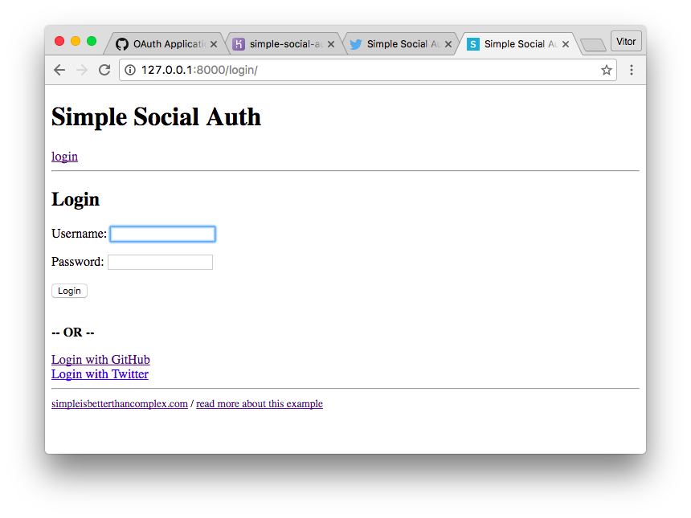
Let’s try it:
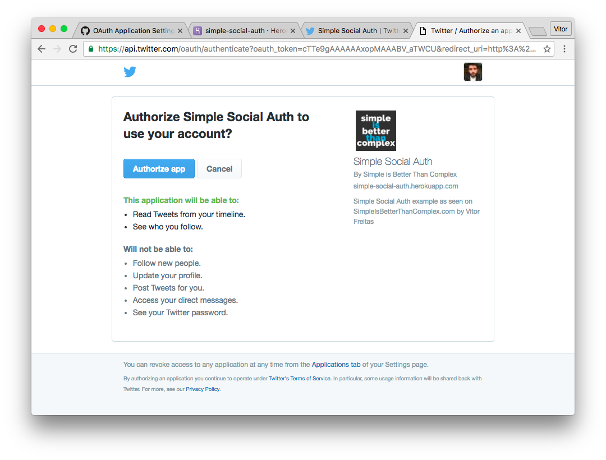 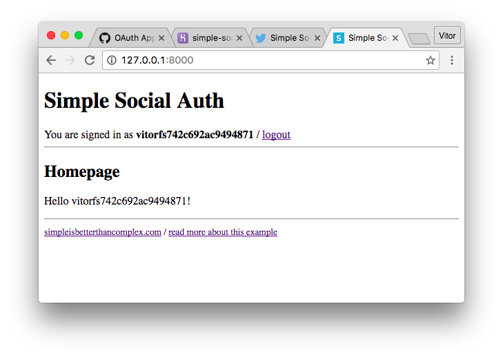
And there you go!
See how it created a new user with a unglier name? vitorfs742c692ac9494871. That’s because both my username on GitHub and on Twitter is vitorfs. And just from the username we can’t guarantee that it’s the same user, the social-auth-app-django handles it by creating a new user and appending an arbitrary string to the end of it.
That’s okay for now! I will show later on where you can work out this behaviour.
Facebook Login
Go to developers.facebook.com/ click on My Apps and then Add a New App.
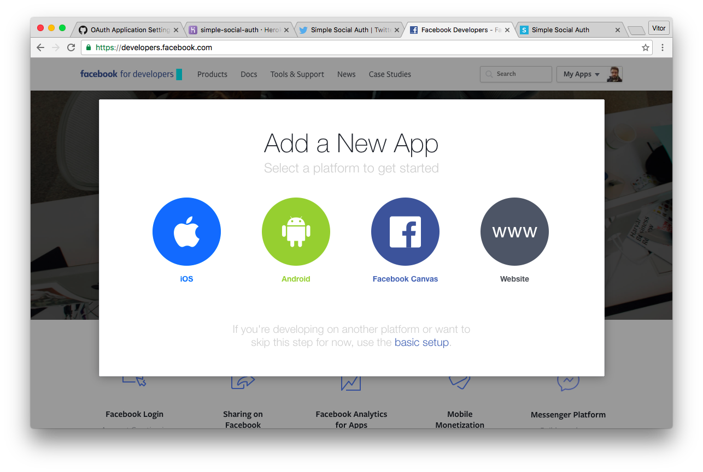
Pick Website.
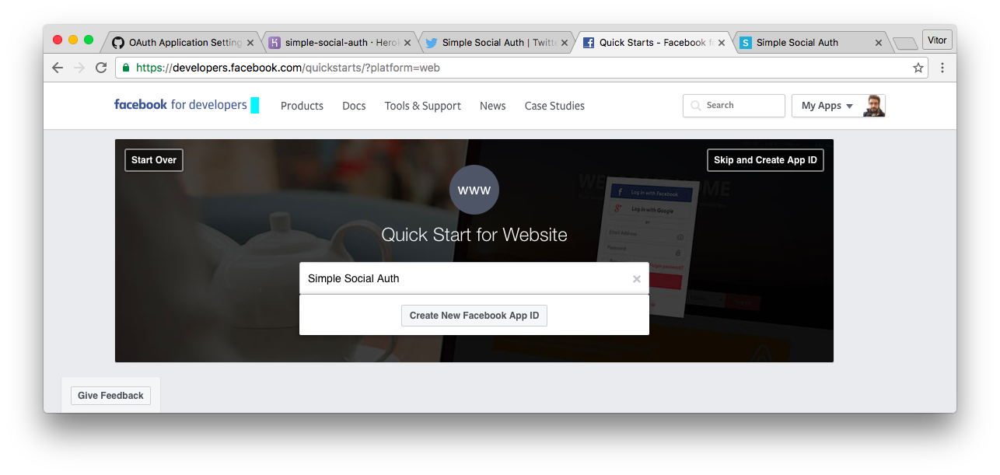
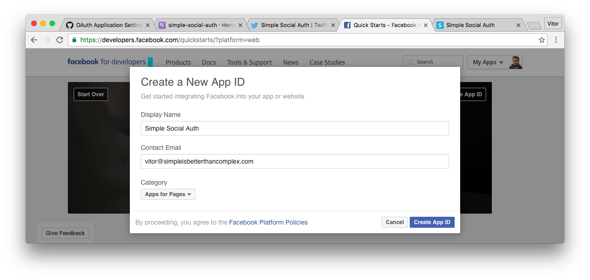
Click on Create App ID. On the next screen click on Skip Quick Start.
From the initial page, grab the App ID and App Secret (click on the Show button to get it as plain text):
SOCIAL_AUTH_FACEBOOK_KEY = '451821651x33143' # App ID
SOCIAL_AUTH_FACEBOOK_SECRET = '524fada3c3ca5adgb279da535da1d863' # App SecretNow go to Settings / Basic. First click on the button + Add Platform and add a website. For the Site URL put http://localhost:8000 and then in the App Domains put just localhost, like the picture below:
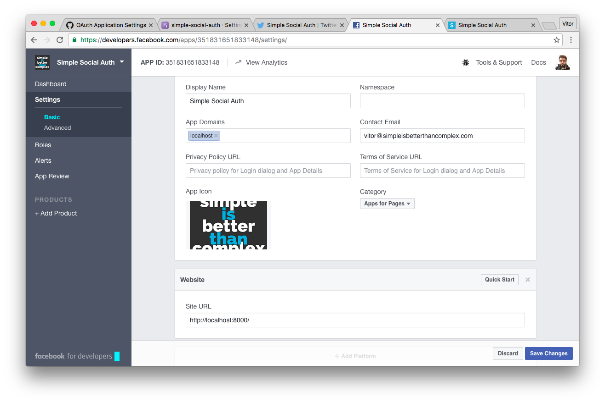
PS: For Facebook we can’t use 127.0.0.1 as the callback. Instead use localhost. Or add a fake host in your local hosts. Usually you can find it at /etc/hosts.
Save changes and we are good to go. Now update the registration/login.html file with the Facebook link:
{% extends 'base.html' %}
{% block content %}
<h2>Login</h2>
<form method="post">
{% csrf_token %}
{{ form.as_p }}
<button type="submit">Login</button>
</form>
<br>
<p><strong>-- OR --</strong></p>
<a href="{% url 'social:begin' 'github' %}">Login with GitHub</a><br>
<a href="{% url 'social:begin' 'twitter' %}">Login with Twitter</a><br>
<a href="{% url 'social:begin' 'facebook' %}">Login with Facebook</a>
{% endblock %}Let’s try it now:
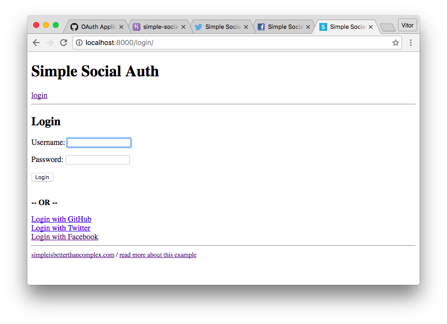
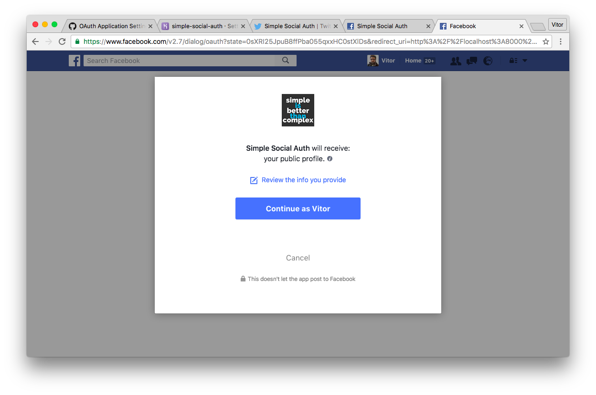
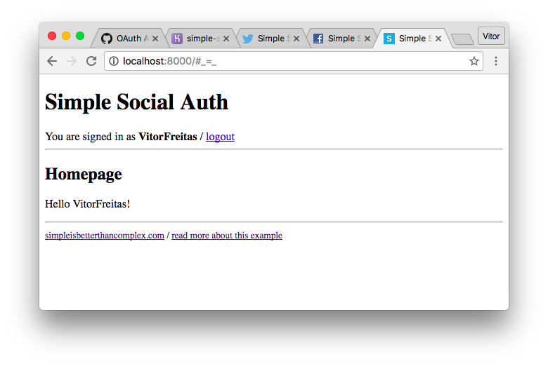
Social Auth Management Page
We can now add a Settings page in our application, where the user can manage the social auth logins. It’s a good way for the user authorize new services or revoke the access.
Basically this page will be responsible for:
- Disconnecting the user from the social networks
- Control if the user can disconnect (that is, the user have defined a password, so he/she won’t be locked out of the system)
- Provide means to connect to other social networks
urls.py
urlpatterns = [
...
url(r'^settings/$', core_views.settings, name='settings'),
url(r'^settings/password/$', core_views.password, name='password'),
]A password view will be very important in this case!
Now update the project settings.py file with the following configurations:
settings.py
SOCIAL_AUTH_LOGIN_ERROR_URL = '/settings/'
SOCIAL_AUTH_LOGIN_REDIRECT_URL = '/settings/'
SOCIAL_AUTH_RAISE_EXCEPTIONS = Falseviews.py
from django.contrib.auth.decorators import login_required
from django.contrib.auth.forms import AdminPasswordChangeForm, PasswordChangeForm
from django.contrib.auth import update_session_auth_hash
from django.contrib import messages
from django.shortcuts import render, redirect
from social_django.models import UserSocialAuth
@login_required
def home(request):
return render(request, 'core/home.html')
@login_required
def settings(request):
user = request.user
try:
github_login = user.social_auth.get(provider='github')
except UserSocialAuth.DoesNotExist:
github_login = None
try:
twitter_login = user.social_auth.get(provider='twitter')
except UserSocialAuth.DoesNotExist:
twitter_login = None
try:
facebook_login = user.social_auth.get(provider='facebook')
except UserSocialAuth.DoesNotExist:
facebook_login = None
can_disconnect = (user.social_auth.count() > 1 or user.has_usable_password())
return render(request, 'core/settings.html', {
'github_login': github_login,
'twitter_login': twitter_login,
'facebook_login': facebook_login,
'can_disconnect': can_disconnect
})
@login_required
def password(request):
if request.user.has_usable_password():
PasswordForm = PasswordChangeForm
else:
PasswordForm = AdminPasswordChangeForm
if request.method == 'POST':
form = PasswordForm(request.user, request.POST)
if form.is_valid():
form.save()
update_session_auth_hash(request, form.user)
messages.success(request, 'Your password was successfully updated!')
return redirect('password')
else:
messages.error(request, 'Please correct the error below.')
else:
form = PasswordForm(request.user)
return render(request, 'core/password.html', {'form': form})Please note that this password view handle both Set password and Change password.
settings.html
{% extends 'base.html' %}
{% block content %}
<h2>Settings</h2>
<h3>GitHub</h3>
{% if github_login %}
<p>Connected as <a href="https://github.com/{{ github_login.extra_data.login }}/" target="_blank">{{ github_login.extra_data.login }}</a></p>
{% if can_disconnect %}
<form method="post" action="{% url 'social:disconnect' 'github' %}">
{% csrf_token %}
<button type="submit">Disconnect from GitHub</button>
</form>
{% else %}
<button type="button" disabled>Disconnect from GitHub</button>
<p style="color: red">You must <a href="{% url 'password' %}">define a password</a> for your account before disconnecting from Github.</p>
{% endif %}
{% else %}
<a href="{% url 'social:begin' 'github' %}">Connect to GitHub</a>
{% endif %}
<h3>Twitter</h3>
{% if twitter_login %}
<p>Connected as <a href="https://twitter.com/{{ twitter_login.extra_data.access_token.screen_name }}/" target="_blank">@{{ twitter_login.extra_data.access_token.screen_name }}</a></p>
{% if can_disconnect %}
<form method="post" action="{% url 'social:disconnect' 'twitter' %}">
{% csrf_token %}
<button type="submit">Disconnect from Twitter</button>
</form>
{% else %}
<button type="button" disabled>Disconnect from Twitter</button>
<p style="color: red">You must <a href="{% url 'password' %}">define a password</a> for your account before disconnecting from Twitter.</p>
{% endif %}
{% else %}
<a href="{% url 'social:begin' 'twitter' %}">Connect to Twitter</a>
{% endif %}
<h3>Facebook</h3>
{% if facebook_login %}
<p>Connected as <a href="https://facebook.com/{{ facebook_login.extra_data.id }}/" target="_blank">{{ facebook_login.extra_data.id }}</a></p>
{% if can_disconnect %}
<form method="post" action="{% url 'social:disconnect' 'facebook' %}">
{% csrf_token %}
<button type="submit">Disconnect from Facebook</button>
</form>
{% else %}
<button type="button" disabled>Disconnect from Facebook</button>
<p style="color: red">You must <a href="{% url 'password' %}">define a password</a> for your account before disconnecting from Facebook.</p>
{% endif %}
{% else %}
<a href="{% url 'social:begin' 'facebook' %}">Connect to Facebook</a>
{% endif %}
{% endblock %}If you look close, it’s just a repetitive work. Basically we are showing if the account is connected with one of the providers, and giving the option to disconnect (whenever it is possible).
Finally the password view, in case you are wondering what it looks like:
password.html
{% extends 'base.html' %}
{% block content %}
<h2>Change Password</h2>
{% if not user.has_usable_password %}
<p style="color: red">You have not defined a password yet.</p>
{% endif %}
<form method="post">
{% csrf_token %}
{{ form.as_p }}
<button type="submit">Save changes</button>
</form>
{% endblock %}The /settings/ page will look like this:
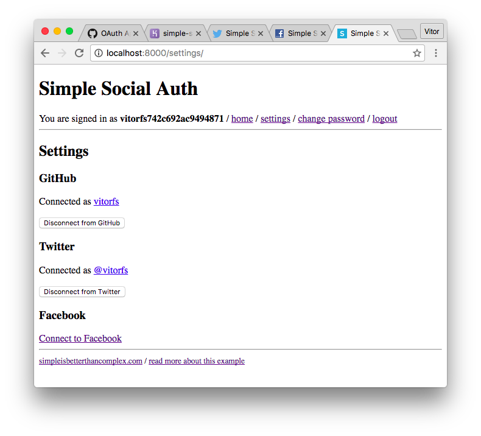
In case I disconnect from Twitter for example, the GitHub Disconnect button will be disabled:
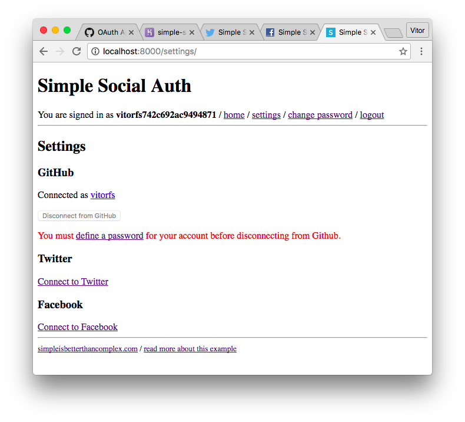
This way we force the user to set a password before disconnecting from GitHub, avoiding her/him to be locked out.
Next Steps
- Read the official documentation for more information
- Learn more about how to deal with sensitive information in the settings.py
- See this example online at simple-social-auth.vitorfs.com
- Grab the code on GitHub github.com/sibtc/simple-social-auth.
 How to Use JWT Authentication with Django REST Framework
How to Use JWT Authentication with Django REST Framework
 How to Implement Token Authentication using Django REST Framework
How to Implement Token Authentication using Django REST Framework
 Django Authentication Video Tutorial
Django Authentication Video Tutorial
 How to Extend Django User Model
How to Extend Django User Model
 How to Setup a SSL Certificate on Nginx for a Django Application
How to Setup a SSL Certificate on Nginx for a Django Application
 How to Deploy a Django Application to Digital Ocean
How to Deploy a Django Application to Digital Ocean